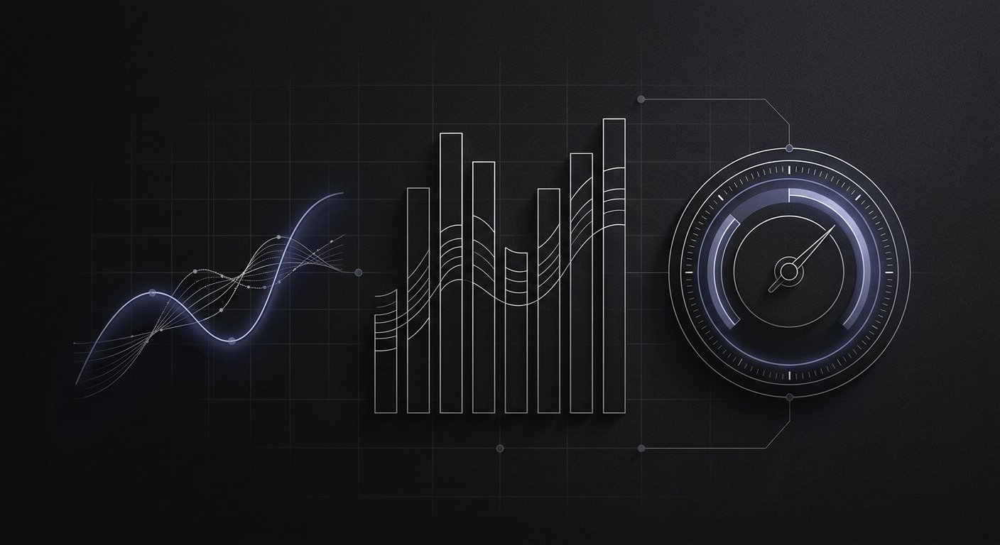
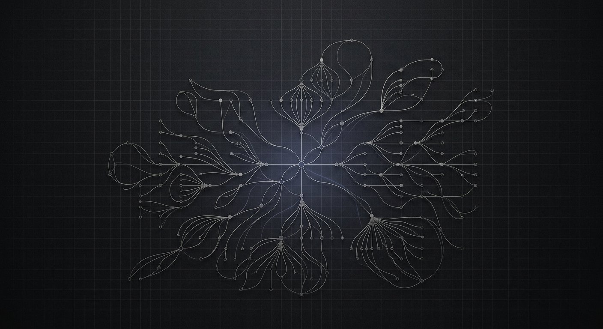

I solve business problems with technology, automation, analytics, and AI — improving processes, bridging teams, and driving operational efficiency.
I intentionally chose to study Computer Science and Technology because it sits at the intersection of deep technical knowledge and business, management, entrepreneurship, and operations. My ambition was never traditional software development — it is using technology to solve business problems.
I care about the systems behind organisations: how processes flow, how information moves between teams, and where automation, analytics, and AI can remove friction and drive measurable efficiency. I enjoy bridging technical and business teams, translating requirements into clear plans, and building the workflows that let companies operate with clarity and speed.
I start from outcomes and constraints, then choose the right technology to move the needle.
I map workflows, remove friction, and design the systems that make teams efficient.
I translate between technical and business stakeholders so everyone stays aligned.
Automation, analytics, and AI are levers I use deliberately to scale operational impact.
The areas where I combine operations, strategy, and technology to solve organisational problems.
Turning business needs into clear requirements, process maps, and actionable solutions.
Running day-to-day operations so teams deliver predictably, efficiently, and at scale.
Coordinating procurement, inventory, and distribution to keep value chains flowing.
Planning milestones, coordinating cross-functional teams, and delivering on time.
Standardising governance, reporting, and portfolio visibility for program success.
Operationalising product decisions with data, workflows, and cross-team alignment.
Optimising sourcing, stock levels, and supplier performance to control cost and risk.
Aligning operational and financial metrics to improve planning and profitability.
Shaping long-term direction, priorities, and roadmaps with structure and evidence.
Mapping, measuring, and redesigning workflows to remove waste and boost throughput.
Turning operational data into dashboards, KPIs, and decisions that move outcomes.
The core operating disciplines that keep teams aligned and delivering.
Interned with a social-impact organisation, applying technology and process skills to keep projects coordinated, documented, and on track across distributed teams.
Led planning and delivery of a platform that verifies and manages digital credentials, coordinating stakeholders and translating needs into a technical plan.

Built operations analytics and monitoring dashboards that surface KPIs and support operational decisions, centred on a Cognitive Waste Index framework.

A strategic planning project combining requirements engineering and content intelligence with interactive visualisation to support better decisions.
Foundations of cloud concepts, core AWS services, security, and architecture.
Core data and database concepts, SQL, and data management fundamentals.
Realistic cloud platform tasks simulating an operations-oriented work environment.
Practical analytics workflow combining SQL, Excel, and Python for insight.
Applying analytics and AI techniques to real business and data problems.
Document database design, modeling, and querying with MongoDB.
If you're looking for someone who can bridge operations, technology, and strategy — I'd be glad to connect.
Typically happy to talk about operations, supply chain, analytics, and AI roles.